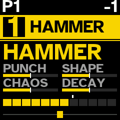
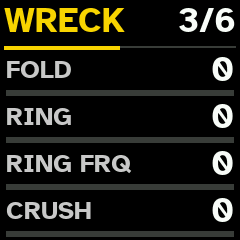
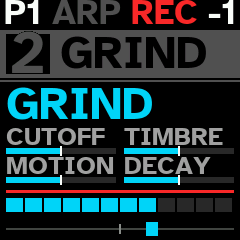
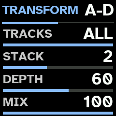
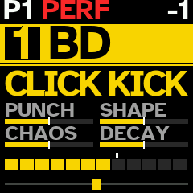
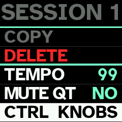
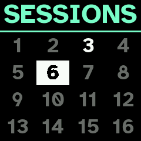
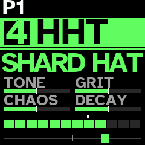

Manual
Everything FM-1 does under Quasar. New here? Start with Controls and Playing it; to install, see Install. Press / to search.
Controls
Numbers on drawings are in table below them; each number links to its row, and each row's number back to its drawing. Names are those printed on FM-1. Black keys are counted from left.
| No. | Control | Under Quasar |
|---|---|---|
| 1 | MASTER | Output level (not USB audio's). |
| 2 | SELECT | Chosen track's level. On SCALE page: root. Step held: its VOL, locked. |
| 3 | PRESETS | Chosen track's engine profile (BD, HAMMER, SKIN, SD, WALL, WIRE, TONE, HHT, STATIC, METAL, SHAKE, GRIND, BASS, FM, PRC, PLUCK). SHIFT +: new sound of family before or after. On a page: its rows, slots or entries; on EDIT and SEQ pages, turned right, rows E to H. On TEMPO page: tempo. |
| 4 | ALGORITHM | Chosen track's pan. On SCALE page: scale. Step held: its pan, locked. |
| 5 | OCT− | Chosen track's octave down. In step view: its transposition. SHIFT +: every track's transposition. On EDIT and SEQ pages: page before. |
| 6 | OCT+ | Same, up. |
| 7 | screen | See Screen. |
| 8 | KNOB 1 | Chosen track's macro 1 (PUNCH, TONE or CUTOFF). SHIFT +: its DRIVE. On a page: row A. |
| 9 | KNOB 2 | Macro 2 (SHAPE, SNAP, GRIT or TIMBRE). SHIFT +: its FX send. On a page: row B. |
| 10 | KNOB 3 | Macro 3 (CHAOS or MOTION). SHIFT +: its ATTACK. On a page: row C. |
| 11 | KNOB 4 | Macro 4 (DECAY). SHIFT +: macro 8 (BEND, RING or RESO). On a page: row D. During PERFORMANCE, KNOB 1–4 turn macro on every track with notes. |
| 12 | FX (T1) | T1 to T6: choose track 1 to 6. From any page, back to track; on SEQ pages, SHIFT + keeps page. In MUTE mode: mute; held (1 s), solo. |
| 13 | SEL (T2) | |
| 14 | ENV (T3) | |
| 15 | LFO (T4) | |
| 16 | EDIT (T5) | |
| 17 | GLO (T6) | |
| 18 | HOME | New sound for chosen track, from another family of its profile. SHIFT +: of same family. Held (0.8 s): save session. |
| 19 | SAVE | PATTERNS grid. Held (0.8 s): save session (on grid: pattern playing, into slot under cursor). SHIFT +: SESSIONS grid; held: GLOBAL SETUP. |
| 20 | ARP | SCALE page. SHIFT +: scale and root at random. |
| 21 | SEQ | Panel pages (SHAOS, LFO, FX, MIX), then chosen track's DUCK and AUTO 1–3. SHIFT +: its LFOs drawn anew. |
| 22 | PLAY | Start or stop sequencer. Held (0.8 s): TEMPO page. SHIFT +: metronome. |
| 23 | REC | Record into steps. SHIFT +: looper; held, track's loops. |
| 24 | black key 1 | CHORD mode; SHIFT +, next form. In step view: new phrase (SHIFT +: new locks; held: PHRASE page). With SHIFT held on PATTERNS grid: empty pattern. |
| 25 | black key 2 | MUTE mode (also on PATTERNS grid). In step view: TRACK page. |
| 26 | black key 3 | Held: BREAK; SHIFT +, on every track. On PATTERNS grid, with white key held 0.8 s: save break. In step view: TRIG. |
| 27 | black key 4 | MIDI LEARN. In step view: MOD. |
| 28 | black key 5 | Arpeggiator; held (0.8 s), its page. |
| 29 | black key 6 | SHIFT + it held: TRANSFORM; held alone (0.8 s), its page. In step view: direction REVERSE. |
| 30 | black key 7 | PERFORMANCE on or off (also on PATTERNS grid). In step view: direction PING-PONG; SHIFT +, PERFORMANCE. |
| 31 | black key 8 | In step view: direction RANDOM. In CHROMATIC: note. |
| 32 | black key 9 | STEP: step view. SHIFT +: empty chosen track's steps. |
| 33 | black key 10 | EDIT: sound pages (not EDIT button, T5). |
| 34 | black key 11 | SHIFT. |
| 35 | 16 white keys | Play chosen track in scale; root's keys glow. In step view: 16 steps. On PATTERNS grid: 16 patterns; on SESSIONS grid: 16 sessions. |
KNOB 1–4:
| Where | KNOB 1 | KNOB 2 | KNOB 3 | KNOB 4 |
|---|---|---|---|---|
| track view (macros) | macro 1 | macro 2 | macro 3 | macro 4 |
| SHIFT held | DRIVE | FX send | ATTACK | macro 8 |
| EDIT | row A (E) | row B (F) | row C (G) | row D (H) |
| SEQ | row A (E) | row B (F) | row C (G) | row D (H) |
| TRANSFORM page | TRACKS | STACK | DEPTH | MIX |
| ARP page | MODE (LATCH) | RATE (DENSITY) | RANGE (OCT RND) | GATE (BASS) |
| step held, step view | macro 1 | macro 2 | macro 3 | macro 4 |
| step held, TRIG on | note (RATCHET) | velocity | length | condition |
| step held, MOD on | MUTATE | MUT EVERY | MIDI FX | FX EVERY |
| PHRASE page | DENSITY | COMPLEXITY | ||
| TRACK page (step view) | LENGTH | CLOCK |
Every gesture in full: Playing it.
Playing it
| Control | What it does |
|---|---|
| 6 top buttons | choose track 1–6 (lit: chosen; glowing dimly: sounding). From any page, back to track. In MUTE mode: mute and solo. |
| PRESETS knob | chosen track's engine profile: BD, HAMMER, SKIN, SD, WALL, WIRE, TONE, HHT, STATIC, METAL, SHAKE, GRIND, BASS, FM, PRC, PLUCK. |
| SHIFT + PRESETS | new sound of family before or after, within profile. |
| HOME | new sound for chosen track, from another family of its profile (Sounds). |
| SHIFT + HOME | new sound of same family. |
| HOME held (0.8 s) | save session, as SAVE held. |
| OCT− / OCT+ | chosen track's octave, −3 to +3. In step view: track's transposition. |
| SHIFT + OCT− / OCT+ | every track's transposition. |
| white keys | play chosen track in scale; keys that play root glow dimly. In step view: track's 16 steps. On PATTERNS and SESSIONS grids: 16 slots. |
| black key 1 | CHORD mode on or off. SHIFT +: next chord form. |
| black key 2 | MUTE mode on or off. |
| black key 3 | held: BREAK on chosen track. SHIFT +: on every track. |
| black key 4 | MIDI LEARN on or off. |
| black key 5 | chosen track's arpeggiator on or off. Held (0.8 s): its page. |
| black key 6 | SHIFT + it held: TRANSFORM on. Held alone (0.8 s): TRANSFORM page. |
| black key 7 | PERFORMANCE on or off. In step view: SHIFT + it. |
| black key 9 (3rd from right) | STEP: step view. SHIFT +: empty chosen track's steps. |
| black key 10 | EDIT: sound pages. |
| black key 11 (last) | SHIFT. |
| SELECT knob | chosen track's level. On SCALE page: root. |
| ALGORITHM knob | chosen track's pan. On SCALE page: scale. |
| KNOB 1–4 | chosen track's macros 1 to 4. On page: its rows A–D. |
| SHIFT + KNOB 1–4 | chosen track's DRIVE, FX send, ATTACK and macro 8. |
| PLAY | start or stop sequencer. Held (0.8 s): TEMPO page. |
| SHIFT + PLAY | metronome on or off. |
| REC | record keys into chosen track's steps. |
| SHIFT + REC | looper: arm loop. Held: track's loops on white keys. |
| ARP | SCALE page (Scales); ARP again leaves it. |
| SHIFT + ARP | new scale and root, drawn at random; SCALE page shows them for 1.5 s. |
| SEQ | panel pages, then chosen track's DUCK and automation LFOs, in turn. |
| SHIFT + SEQ | chosen track's automation LFOs drawn anew. |
| SAVE | PATTERNS grid; SAVE again leaves it. |
| SAVE held (0.8 s) | save session. On PATTERNS grid: save pattern playing into slot under cursor, which then plays. |
| SHIFT + SAVE | SESSIONS grid; SHIFT + SAVE again leaves it. |
| SHIFT + SAVE held (0.8 s) | GLOBAL SETUP: START and MIDI. |
| MASTER | output level. |
| MIDI in (USB and TRS) | notes and CCs for each track (MIDI). |
While macro knob turns, screen shows its value as large dial for 1 s.

Tracks and sounds
Quasar models SOMA Pulsar-23 drum synthesizer with engine written from scratch. It follows instrument's published behaviour; no circuit values were available, and it has not been compared by ear with real Pulsar-23. It is aimed at IDM 1st, rhythmic noise 2nd.
6 tracks, each with its own engine profile, sound, octave, level, pan, steps and loops. There are no subtracks. Each track is 1 circuit and sounds 1 note at a time: new note strikes it again at new pitch. Every sound is percussive: it falls once its attack peaks, whether key is held or not.
There is no TUNE control. Every circuit takes its pitch from note played, drums too, so drums follow scale. BD sounds 2 octaves below note, SD's pitched noise 4 above, HHT's noise clock 6 above, BASS at note; each recipe sets offset from it.
Velocity sets how hard circuit is struck. Keys always play at full velocity.
FM-1's 2nd processor core renders about half the sounding tracks. If it ever faults, 1st core carries on alone until FM-1 is switched off, and screen says 1 CORE.
Start (and new session): track 1 HAMMER, 2 GRIND, 3 WALL, 4 HHT, 5 SKIN, 6 STATIC, track 1: octave down.
Engine profiles
PRESETS chooses chosen track's profile: circuit and 1 of its modes. BD, SD, HHT and BASS are Pulsar-23's 4 voices; others are modes written for Quasar that go past instrument.
| Profile | Circuit | What it is |
|---|---|---|
| BD | BD | Pulsar's kick: triangle core with pitch sweep at each strike, shaped from triangle to sine to square. Kicks, toms, zaps |
| HAMMER | BD | BD core folded over 1 to 9 times, low noise rumble that outlasts strike, click and hard clip: industrial impact, gabber, doom |
| SKIN | BD | struck membrane, its fundamental and 2nd mode, with stick click: war toms, tabla, surdo |
| SD | SD | Pulsar's snare: pink noise and pitched noise, clap, resonant band-pass |
| WALL | SD | power noise: sample-rate crush, dropped bits, rhythmic chop, screaming band-pass and hard clip. No clap |
| WIRE | SD | snare noise through comb 2 octaves above note: buzz, rattle, tin |
| TONE | SD | 2 struck body modes against filtered noise: 808-style tone snares |
| HHT | HHT | Pulsar's hat: noise resampled at clock that follows note, spectrum warp, resonant high-pass |
| STATIC | HHT | electrical crackle: impulses and short arcs ringing in high-pass |
| METAL | HHT | 6 square oscillators at 808's ratios, summed or ring-modulated: cymbals, scrap |
| SHAKE | HHT | noise in grains a few milliseconds long |
| GRIND | BASS | oscillator pushed by its own overdriven filter, ring-modulated by noise: screams, howl, drills |
| BASS | BASS | Pulsar's bass: feedback oscillator from sine to saw to square, warp shaper, resonant low-pass, glide |
| FM | BASS | 2-operator ping: gongs, clang, broken bells |
| PRC | BASS | 3 resonators struck by impulse and noise, harmonic or detuned cluster |
| PLUCK | BASS | struck string: sitar buzz, piano wire |
Track keeps 1 sound for each of 4 circuits (BD, SD, HHT, BASS), modes included. Turning PRESETS onto profile whose circuit's sound is in that mode finds it as it was; onto another mode of circuit, it draws new sound of that profile, in place of circuit's sound. So turning from SKIN to SD and back finds both; turning from HAMMER to SKIN replaces HAMMER sound. MODE row of circuit page changes mode in place, sound's knobs kept.
Sounds
HOME draws new sound for chosen track from another family of its profile: recipe such as BURNT 909, GABBER, WAR TOM, NOISE WALL, SHARD HAT, GEIGER, SCREAMER or BROKEN BELL. SHIFT + HOME draws another from same family; SHIFT + PRESETS moves to family before or after, within profile. Screen shows profile and family. There are 147 families, all percussive and abrasive: no drones, no long decays.
| Circuit | Profiles (families) |
|---|---|
| BD | BD (19), HAMMER (11), SKIN (11) |
| SD | SD (12), WALL (10), WIRE (7), TONE (5) |
| HHT | HHT (13), STATIC (7), METAL (8), SHAKE (5) |
| BASS | GRIND (11), BASS (9), FM (7), PRC (6), PLUCK (6) |
Each family is circuit setting, envelope, drive and FX send, and up to 4 routes. Each drawing moves every knob by family's spread, picks each route's source and depth, varies drive and send, adds further route half the time, and wrecks about half the sounds. So SHIFT + HOME seldom gives same sound twice. Each family's VOL is set to level its hits against others, hats about 6 dB under. SHAOS and clock dividers step drive, filters and level in recipes, never pitch.
Sound pages (EDIT)
Black key 10 (EDIT) shows sound's 6 pages: circuit's own (titled with profile), ENV, WRECK, MACRO, ROUTE 1 and ROUTE 3. KNOB 1–4 set rows A to D; PRESETS turned right shows E to H, left goes back. OCT− / OCT+ move between pages. EDIT again leaves. Values read 0 to 100.
Circuit page
Circuit's knobs, named as its mode uses them; last row is MODE.
| Profile | A | B | C | D | E | F | G |
|---|---|---|---|---|---|---|---|
| BD | AMT | PITCH | SHAPE | STAB | MODE | ||
| HAMMER | AMT | PITCH | FOLD | RUMBLE | MODE | ||
| SKIN | AMT | PITCH | HEAD | STICK | MODE | ||
| SD | AMT | CLAP | MIX | BPF FR | BPF Q | MODE | |
| TONE | AMT | CLAP | NOISE | BPF FR | BPF Q | MODE | |
| WIRE | AMT | CLAP | MIX | BPF FR | BUZZ | MODE | |
| WALL | CRUSH | CHOP | BITS | BPF FR | BPF Q | MODE | |
| HHT | WARP | HPF FR | HPF Q | MODE | |||
| METAL | RING | HPF FR | HPF Q | MODE | |||
| SHAKE, STATIC | DENSITY | HPF FR | HPF Q | MODE | |||
| BASS, PRC | SHAPE | WARP | AMT | LPF FR | LPF Q | GLIDE | MODE |
| PLUCK | BRIGHT | SUSTAIN | AMT | LPF FR | LPF Q | GLIDE | MODE |
| FM | RATIO | INDEX | AMT | LPF FR | LPF Q | GLIDE | MODE |
| GRIND | FDBK | RING | AMT | LPF FR | LPF Q | GLIDE | MODE |
- AMT sets how far route into circuit's modulation input moves it (BD: MOD, pitch; SD: TUNE; BASS: PM). With no route there, it does nothing.
- PITCH (BD): depth and decay of pitch sweep at each strike. STAB: core restarts at each strike.
- CLAP (SD, TONE, WIRE): 1 to 4 bursts. It sounds only on hits of velocity 113 or more (step's VEL 89 or more); keys always clap.
- MODE: BD: TRI, SKIN, HAMMER; SD: NOISE, TONE, WIRE, WALL; HHT: NOISE, METAL, SHAKE, STATIC; BASS: DCO, PRC, PLUCK, FM, GRIND. Changing it changes profile.
ENV
ATT (attack, from 0.3 ms to about 5 s), REL (release), VOL (sound's level; each family's own at first), FX (its send to FX processor) and, on E, DRIVE (voice's overdrive, also on SHIFT + KNOB 1 and MACRO page). REL stops growing at 57: every sound is short.
WRECK

Stage after sound's overdrive: FOLD (triangle wavefolder), RING (ring modulator with its own sine), RING FRQ (its frequency, 20 Hz to 5 kHz, whatever note), CRUSH (sample-rate reduction), and on E, BITS (up to 12 bits dropped). All at 0 bypass it. About half of all new sounds come with 1 or 2 of them. Phrases lock them step by step, and BREAK's WRECK layer throws them onto single hits.
Macros
KNOB 1–4 on track's view turn sound's macros 1 to 4, and SHIFT + KNOB 1–4 its macros 5 to 8. MACRO page shows all 8. Names depend on circuit:
| Circuit | KNOB 1 | KNOB 2 | KNOB 3 | KNOB 4 | SHIFT + 1 | SHIFT + 2 | SHIFT + 3 | SHIFT + 4 |
|---|---|---|---|---|---|---|---|---|
| BD (BD, HAMMER, SKIN) | PUNCH | SHAPE | CHAOS | DECAY | DRIVE | FX | ATTACK | BEND |
| SD (SD, WALL, WIRE, TONE) | TONE | SNAP | CHAOS | DECAY | DRIVE | FX | ATTACK | RING |
| HHT (HHT, STATIC, METAL, SHAKE) | TONE | GRIT | CHAOS | DECAY | DRIVE | FX | ATTACK | RING |
| BASS (GRIND, BASS, FM, PRC, PLUCK) | CUTOFF | TIMBRE | MOTION | DECAY | DRIVE | FX | ATTACK | RESO |
Macros 1–4 and 8 move sound about its recipe: 50 is recipe as drawn (white tick on screen's bars), lower takes away, higher adds. Each moves up to 4 of circuit's knobs at once:
| Circuit | Macro | What it moves |
|---|---|---|
| BD | PUNCH | pitch sweep up, release a little shorter, SHAPE a little |
| SHAPE | SHAPE (triangle towards square; FOLD on HAMMER, HEAD on SKIN) | |
| CHAOS | AMT | |
| DECAY | release, and a little more pitch sweep | |
| BEND | AMT, less far | |
| SD | TONE | band-pass frequency, pitch, MIX |
| SNAP | CLAP up, MIX down, band-pass Q up | |
| CHAOS | AMT | |
| DECAY | release | |
| RING | band-pass Q | |
| HHT | TONE | high-pass frequency, pitch |
| GRIT | WARP up, pitch down, Q a little | |
| CHAOS | nothing directly: only routes set to M3 | |
| DECAY | release | |
| RING | high-pass Q up, frequency a little down | |
| BASS | CUTOFF | low-pass frequency, WARP a little |
| TIMBRE | SHAPE, WARP, Q a little | |
| MOTION | AMT | |
| DECAY | release, cutoff a little down | |
| RESO | low-pass Q, cutoff a little down |
Knobs moved keep their meaning in mode: SNAP on WALL moves CHOP and BITS. Route set to M1–M4 or M8 is scaled by that macro too (0 off, 50 as set, 100 about 2×), so CHAOS and MOTION open or close sound's modulation.
Macros 5–7 are sound's own DRIVE, FX send and ATTACK. DRIVE is voice's overdrive: pre-emphasis, asymmetric clipper whose bias sags with level, and de-emphasis that darkens as it rises; level stays about same, so it thickens rather than gets louder. At 0 it is bypassed.
Routes
ROUTE 1 shows routes 1 (A–D) and 2 (E–H); ROUTE 3 routes 3 and 4. Each route is patch cable inside sound:
| Row | What it sets |
|---|---|
| SRC | source: — (none), pin of any track (1 OUT, 2 ENV ...), OWN OUT and OWN ENV (track sound is on), NOISE, clock and its dividers (CLK, DIV 16 to DIV .25), SHAOS's outputs (SH 1B, SH 2B, SH 1B SH, SH 3B SH), LFO (LFO SQR, LFO TRI), FX outputs, and panel's other pins |
| DST | where it goes. BD: EXT, MOD, WTF?, OMG!, DRIVE, VCA. SD: EXT, TUNE, BPF, DRIVE, VCA. HHT: EXT, TUNE, HPF, DRIVE, VCA. BASS: EXT, CV IN, SHAPE, WARP, PM, LPF, DRIVE, VCA |
| DEPTH | −127 to +127; on VCA, negative ducks |
| MACRO | -, or M1 to M8: macro that scales it (M5 to M7 do not) |
EXT feeds source into circuit as audio; DRIVE and VCA push sound's drive and level. Route from another track's OUT gives cross-modulation and feedback between tracks. Panel's utility pins (VCAs, switches, attenuators, pulse converters, diode, capacitors, TOUCH and MIDI CV) need cables on Pulsar-23; Quasar has none, so they give nothing useful. Route arrives about 0.73 ms late; those other than EXT are followed every 4th sample.
Keys and scales
White keys play chosen track in scale: 1st key is root, each key next degree. Keys that play root glow dimly. USB and TRS MIDI notes play chosen track as keys do (MIDI).
Scales
ARP opens SCALE page: SELECT sets root, ALGORITHM scale. ARP again, or track button, leaves it. SHIFT + ARP draws scale and root at random and shows them for 1.5 s over any page. Scale and root belong to session. New session draws them at random.
Scales: CHROMATIC (black key 8 plays too), MAJOR, MINOR NATURAL, MINOR HARMONIC, DORIAN, PHRYGIAN, MINOR PENTA, MAJOR PENTA, WHOLE TONE, JAPANESE IN, MINOR MELODIC, ENIGMATIC, LYDIAN, MIXOLYDIAN, LOCRIAN, BLUES, HUNGARIAN MINOR, DOUBLE HARMONIC, PHRYGIAN DOMINANT, JAPANESE HIRAJOSHI, JAPANESE IWATO, PELOG, OCTATONIC, PROMETHEUS.
Transposition
In step view, OCT− / OCT+ move chosen track's steps and loops 1 step of scale down or up (in CHROMATIC, semitone). SHIFT + OCT− / OCT+, in track's view or step view, move every track's. Notes stay in scale. Transposition shows at top right, beside octave (T+2, T−1), up to 24 steps each way. It is part of pattern: saved with it, and copied with it. It moves only loops of pattern playing; loop being recorded is left as it is. Keys' octave does not change.
CHORD mode
Black key 1 turns CHORD mode on or off for chosen track (lit while on). Each white key then gives chord from its note, in scale. SHIFT + black key 1 chooses next form: TRIAD, INV 1, INV 2, SUS2, SUS4, OPEN, FOURTHS. Form shows at top left. Steps, recording and looper take chords. Tracks on BD circuit (BD, HAMMER, SKIN) take no chords: NO CHORDS shows.
Track sounds 1 note at a time, so chord is heard as its last note only. CHORD mode matters most as way to write chords into steps and loops, and to feed arpeggiator.
Arpeggiator
Black key 5 turns chosen track's arpeggiator on or off (lit while on; ARP shows at top left). Keys held, and MIDI notes for track, then play 1 at a time on tempo's grid: with sequencer's 16ths while it plays, on their own at tempo while it is stopped. With CHORD mode on, each key gives it chord's notes.
Hold black key 5 (0.8 s) to open or close ARP page (KNOB 1–4 rows A to D; PRESETS right, E to H):
| Row | What it sets |
|---|---|
| MODE | UP, DOWN, UP DOWN, DOWN UP, ORDER (as played), RANDOM, CONVERGE (from ends in), DIVERGE (from middle out), PINKY (top note between each of others), THUMB (lowest between each) |
| RATE | 1/32, 1/16T, 1/16, 1/8T, 1/8, 1/4 |
| RANGE | 1 to 4 octaves |
| GATE | each note's length, 0 to 100 |
| LATCH | OFF, ON: notes keep playing with keys up, until next chord |
| DENSITY | chance that each note plays, 0 to 100 |
| OCT RND | chance that note jumps octave, 0 to 100 |
| BASS | OFF, or EVERY 2 to EVERY 8: every so many notes, lowest 1 octave down |
REC records arpeggio into steps and SHIFT + REC into loop; with either armed, its first note starts sequencer. Arpeggiator and its settings are saved with session and pattern.
MUTE mode
Black key 2 turns MUTE mode on or off (lit while on; screen reads MUTE MODE). Track buttons then mute instead of choosing:
| To | Do this |
|---|---|
| Mute track, or bring it back | press its button (lit: playing; dim: muted) |
| Solo track | hold its button 1 s |
| End solo | hold it 1 s again: mutes come back as they were |
Muted track fades out, its FX send with it; its steps keep running silently. Its bar on screen turns grey. Mutes stay when MUTE mode is turned off. They are saved with pattern. MUTE mode also works on PATTERNS grid.

MUTE QT (on session's page, saved with session): with YES, mute, unmute or solo waits for start of pattern's next cycle, moment chosen track begins its steps again (as pattern switch does), and its button blinks until then. Stopped, it happens at once. Choosing pattern drops mutes still waiting: pattern brings its own. With NO (at first), they happen at once.
BREAK
While sequencer plays, hold black key 3 to break up chosen track's pattern; SHIFT + it, every track's. It works from any page out of step view, and on PATTERNS grid. Nothing is written into steps: when key is let go, pattern carries on from where it would have been.
Each press draws plan: 1 way of playing steps, shown on screen, and layers on top. Held, new plan comes about every other bar, never same way 2 times running. Break starts on track's next beat:
| Way | What plays |
|---|---|
| REPEAT 1, 2, 4 or 8 | window of that many steps, played over and over |
| HALF TIME | steps at half speed |
| DOUBLE | steps at double speed |
| REVERSE 4 or 8 | each window of 4 or 8 steps backwards, its 1st step in place |
| CHOP | bar's 4 beats shuffled, 1st in place |
| ROLL | steps as written, with more ratchets |
| SHUFFLE | bar's 16 steps in another order |
| POLY | each track round its own window of 3, 5, 6, 7 or 9 steps, against bar |
| JUMP | each beat leap to another beat |
| SKIP | steps read 3, 5, 7, 9 or 11 at a time through bar |
Layers, each drawn at random (at least 1): ratchets (up to 8, faster the longer key is held), octave leaps on melodic tracks, flams on drums, accents (full on beat, softer between), RISE (hits climbing in pitch through each half bar), WRECK (single hits folded, crushed, bit-reduced or rung), XFM (TRANSFORM thrown in for a beat or so, as its page sets it, over tracks under break) and GHOST (soft hits on empty steps). Kick keeps bar's 1st step, takes few ratchets and no leaps, rises or ghosts. Nothing drops out. Loops play on as recorded.
Saving break. On PATTERNS grid, with black key 3 held and sequencer playing, hold white key 0.8 s: break, as it plays, is saved into that pattern slot (BREAK SAVED, PATTERN n). It keeps way, ratchets, octave leaps, flams, accents and RISE; not WRECK, XFM or GHOST. Pattern playing goes on.
Effects (SEQ)
SEQ shows Pulsar-23's panel pages SHAOS, LFO, FX and MIX, then chosen track's DUCK and AUTO 1 to 3, in turn, then goes back. OCT− / OCT+ move between them. KNOB 1–4 set first 4 rows; PRESETS turned right shows next 4. Track button goes back to track; SHIFT + track button chooses another track and stays on page. Panel belongs to session.
| Page | Rows |
|---|---|
| SHAOS | FREQ, LENGTH (63, 16, 217): shift register's rate and length of its cycle. It moves routes that read SH 1B, SH 2B, SH 1B SH or SH 3B SH |
| LFO | FREQ, SHAPE (falling saw to triangle to rising saw), RANGE (LOW, MID, HI), MOD AMT. It moves routes that read LFO SQR or LFO TRI. MOD AMT does nothing: no cable reaches LFO's MOD input |
| FX | MODE (BPF, DBL, PCH), FX TO (DLY, REV), TIME, TUNE; then FB, CLK MOD, MAD! (OFF, ON) |
| MIX | DLY OUT, REV OUT (FX returns), DRIVE, DIST MIX (parallel distortion on whole mix) |
| DUCK | chosen track's SC SOURCE and SC LEVEL (Sidechain) |
| AUTO 1–3 | chosen track's automation LFOs |
Pulsar-23's CLOCK, LOOPER, ATTEN, CV and PATCH pages are not shown: without cables none of them sounds, and Quasar runs with no cables. Clock follows session tempo.
FX processor is 1 delay and 1 reverb, after Pulsar-23's. Every sound's FX send goes to delay or to reverb, as FX TO says. TIME sets delay (1 ms to about 0.6 s; it does not follow tempo), FB delay's feedback and reverb's decay. MODE: BPF puts band-pass (TUNE) in delay's feedback; DBL 2nd tap (TUNE); PCH pitch shifter of up to 1 octave either way (TUNE) in delay, and opposite one in reverb. MAD!: in BPF and PCH, delay reads that follow signal, feedback past unity with clipping, random pitch jumps; in DBL, stereo outputs. CLK MOD does nothing: it needs cable.
Sidechain (DUCK)
On DUCK page, SC SOURCE chooses whose hits duck chosen track (OFF, or T1 to T6) and SC LEVEL how deep, 0 to 100. Duck follows source sound's envelope: it lets go as source's hit dies away. Track's FX send ducks with it. Both are saved with pattern.
TRANSFORM
Changes how tracks sound, never when they play: stack of firmware's own effects over 2 to 6 tracks. Hold SHIFT and black key 6 (in either order; step view off): TRANSFORM is on until either key is let go, and TRANSFORM shows on screen. Each press draws new stack. It is meant for playing live; BREAK is what rearranges steps.
Hold black key 6 alone (0.8 s) to open or close TRANSFORM page (key lit while it is on or page is up):

| Row | What it sets | At first | RND draws |
|---|---|---|---|
| TRACKS | RND, 2, 3, 4, 5 or ALL: how many tracks. Tracks with notes are taken first, then others | ALL | 2–6 |
| STACK | RND, 1–5: how many of DRIVE, FOLD, RING, CRUSH and BITS, picked at random each press | 2 | 2–4 |
| DEPTH | RND, 0–100: how hard each effect is set | 60 | 25–100 |
| MIX | RND, 0–100: how much of stack replaces tracks' sound | 100 | 50–100 |
RND is first value of each row: turn number below 0, or list back to its start. Row on RND draws new value at each press, in range above, kept narrow enough that change is heard. Settings are kept with session; session saved before this build starts with values above.
Effects come after each voice's own WRECK and fade in and out over a few milliseconds: DRIVE soft-clips at 4–20× gain, FOLD folds at 2–7×, RING ring-modulates with triangle at 30 Hz–3 kHz, CRUSH holds each sample for 3–15 samples, BITS keeps 2 or 3 bits. DEPTH sets each within its range, with some spread per press.
TRANSFORM leaves delay and reverb as FX page sets them. (Earlier version could also send tracks into them, in time with tempo; on FM-1 that dragged sequencer, so it was taken out.)
Automation LFOs
Each sound has 3 LFOs, on pages AUTO 1 to 3. They belong to sound, so each circuit's sound on track has its own, and they are saved with session. They move track's sound as a whole.
| Row | What it sets |
|---|---|
| SPEED | −64 to +63; negative runs wave backwards. SPEED +32 with MULT x4 is 1 bar |
| MULT | x1 to x2048 follow tempo; .1 to .2048 run as at 120 BPM whatever tempo |
| FADE | 0 none; negative fades LFO in, positive fades it out, from each note |
| DEST | NONE, or parameter of sound. AUTO 2 can also move AUTO 1's SPEED or DEPTH, and AUTO 3 those of AUTO 1 or 2 |
| WAVE | TRI, SINE, SQR, SAW, EXP, RAMP, RND (new random value each cycle) |
| START | where wave starts on note. For RND: how smoothly it moves to each new value |
| MODE | FREE runs on; TRIG starts again on each note; HOLD holds its value from each note to next; ONE runs 1 cycle from each note; HALF half cycle |
| DEPTH | −64 to +63, how far each way; negative turns wave upside down; 0 off |
DEST names parameter with short prefix: S1 circuit page, S2 ENV, S3 MACRO (macro 6 not), F1 WRECK; AMP lists ATT, REL and VOL again, FX VOL, DRIVE, FX, REL and ATT again. Routes cannot be moved.
SHIFT + SEQ draws chosen track's 3 LFOs anew (LFO RANDOM): 2 or 3 of them on, each to different parameter, with any wave, speed, mode and depth. Press it again for another. LFO settings cannot be step-locked.
PERFORMANCE
Black key 7 (in step view, SHIFT + black key 7; also on PATTERNS grid) turns PERFORMANCE on or off, after Elektron's temporary edits and CONTROL ALL. Key is lit while it is on, and PERF shows in red on status line.

Turned on, it keeps state playing: every track's sound, steps and their locks, lengths, clocks and directions, levels, pans, mutes, octaves, chords, arpeggiators, sidechains, panel and TRANSFORM pages, tempo, scale and MUTE QT. Change anything: sounds, EDIT pages, phrases, steps, breaks. Turned off, all of it is put back as it was (RESTORED), and nothing is left marked unsaved. Sounds still ringing are not cut; they and FX tails ring out. Loops are not part of it: loop recorded or emptied meanwhile stays so. With pattern on its way, it does not turn on: WAIT shows.
While it is on, KNOB 1–4 (and SHIFT + them) turn that macro on chosen track and on every other track with notes (steps or loop), each moving whatever that macro moves on its own sound, by same steps.
Keeping pattern. SAVE still opens PATTERNS grid: hold white key 0.8 s (or SAVE, on cursor's slot) to keep what is playing as that pattern, its steps and tracks' state. Keeping pattern also keeps session as it plays at that moment (sounds, panel, tempo, scale); changes made after last pattern kept are undone as PERFORMANCE goes off. If no pattern is kept, nothing stays. Machine returns to pattern it started on; if it was kept over, as kept.
Meanwhile, sessions (SHIFT + SAVE, SAVE or HOME held), switching patterns (keys or program changes), and copying, pasting or emptying patterns wait till it is off: PERF MODE shows.
CTRL ALL
CTRL on each session's page (CTRL KNOBS or CTRL ALL; saved with session) sets what else follows chosen track while PERFORMANCE is on:

- KNOBS (at first): only macros.
- ALL: also new phrase or new locks (black key 1, SHIFT + it, in step view), direction, TRACK page's LENGTH and CLOCK, PHRASE page's DENSITY and COMPLEXITY, step view's transposition, HOME's and SHIFT + HOME's new sound, and every turn on EDIT page: same page and row on each other track, by same steps (on another circuit that row may be another parameter). Lists, such as MODE and routes' SRC, DST and MACRO, are left alone.
Each track does it on its own steps and sound; tracks without notes are left alone.
Sequencer
Each track has 16 steps, with its own length (1 to 16), clock (1/8, 1/4, 1/2, 1X, 2X, 4X) and direction. PLAY starts and stops it. Pulsar-23's clock and its dividers restart with PLAY.
Step view
Black key 9 (STEP) turns step view on or off. White keys are then chosen track's 16 steps: lit, note; dim, empty; step playing, other way round; past track's length, dark. Steps are silent while you edit them.
| To | Do this |
|---|---|
| Put note in | press empty step: track's last note (or chord) goes there |
| Empty step | press step with note, and let go |
| Lock macro on step | hold step and turn KNOB 1–4 (macros 1–4) or SHIFT + KNOB 1–4 (DRIVE, FX, ATTACK, macro 8) |
| Lock level or pan | hold step and turn SELECT (sound's VOL) or ALGORITHM (pan) |
| Lock sound parameter | hold step with EDIT pages up and turn knob; up to 8 locks per step |
| Copy step | SHIFT + hold it 0.8 s (COPY blinks) |
| Paste it | SHIFT + hold another step 0.8 s, on this track or another |
| Empty whole track | SHIFT + STEP (with step view on or off): its steps and locks; rest of track is kept |
Any EDIT row can be locked, MODE and routes included: step can play circuit in another mode.
Black keys, lit dimly, do this in step view:
| Key | What it does |
|---|---|
| black key 1 | new phrase for track. SHIFT +: new locks on its steps. Held (0.8 s): PHRASE page |
| black key 2 | TRACK page: LENGTH and CLOCK |
| black key 3 | TRIG on or off: step held shows its own page |
| black key 4 | MOD on or off: step held shows its MOD page |
| black keys 6, 7, 8 | track's direction: REVERSE, PING-PONG, RANDOM; pressed again, forwards |
| SHIFT + black key 7 | PERFORMANCE on or off |
Step pages
TRIG: KNOB 1 step's note (in scale), 2 its velocity, 3 its length, 4 its trig condition; with PRESETS turned right, KNOB 1 its RATCHET (step played 2, 3, 4, 6 or 8 times). Conditions are Digitone II's: PRE and !PRE (as last condition was met or not), NEI and !NEI (as track before met its condition), 1ST and !1ST (1st time through), probabilities, and A:B (A-th time of every B).
MOD: KNOB 1 MUTATE (note moved by up to N steps of scale, or RND), 2 MUT EVERY (how often), 3 MIDI FX (ECHO, ECHO UP, ECHO DN, STUTTER, FLAM, LATE, GRACE, FIFTH, TRIAD, OCT UP, OCT DN, DROP), 4 FX EVERY. FIFTH, TRIAD and octaves sound with note, so on track that sounds 1 note at a time added note takes its place.
Phrases
In step view, black key 1 writes new phrase for chosen track: steps, notes, velocities, lengths, conditions, ratchets, MIDI FX and locks, made for role of its family (KICK, SNARE, HAT, PERC, NOISE, BASS, LEAD). Rhythms are straight, broken, Euclidean or clustered, aimed at IDM and rhythmic noise rather than dance floor.
Phrase also sets track's length, clock and direction:
- Polymeters: most often track gets its own length (5, 7, 9, 11, 13 steps and others) against bar; kicks less often.
- Hats, noise and percussion sometimes run 2× as fast or at half speed; any role but kick sometimes runs backwards, ping-pong or at random.
- Generative layer, about 1 phrase in 3 and more often as COMPLEXITY rises: 2 Euclidean rhythms of other lengths crossed over steps, ratchets mostly in 3s, hits pulled late or graced, velocities walking, conditions on most steps.
Locks move macros (cutoff, drive, decay, attack, FX send, macro 8), VOL, pan and WRECK (BITS, CRUSH, FOLD, RING) step by step. SHIFT + black key 1 draws new locks only, notes kept.
Hold black key 1 (0.8 s) for PHRASE page: DENSITY (KNOB 1) and COMPLEXITY (KNOB 2), 0 to 100, 50 at first. DENSITY below 50 thins phrase out (strong steps last); above, it adds ghosts. COMPLEXITY below 50 takes locks away; above, it adds locks, ratchets, MUTATE and MIDI FX, and makes polymeters and generative layer more likely. Both are kept with pattern.
Recording
REC records keys into chosen track's steps, each note with its velocity and length, until REC again. Stopped, REC arms (it flashes, metronome counts in) and first note starts sequencer. SHIFT + PLAY turns metronome on or off (on at first); it clicks while REC or looper is armed or recording.
Looper
SHIFT + REC arms loop on chosen track; first note starts it (and sequencer, if stopped). REC ends it. Its length is rounded to whole bars (1 to 32), so it stays in time with steps (LOOP 1 4 BARS shows). 3 loops per track, up to 256 notes each.
| To | Do this |
|---|---|
| See track's loops | hold SHIFT + REC: they show on white keys 1–3 (lit: playing; dim: muted) |
| Mute loop, or bring it back | with SHIFT + REC held, press its key |
| Empty loop | with SHIFT + REC held, hold its key 0.8 s |
| Empty all track's loops | hold SHIFT + REC 1.5 s without touching any key |
Loop belongs to pattern it was recorded in. Another pattern does not play it, and empty pattern plays nothing. When pattern comes in, its loops start with its steps. Saving, copying or pasting pattern takes its loops along; emptying it removes them. All patterns share room for 40 loops and 4608 notes: when it is full, arming loop shows NO ROOM, and pattern saved into another slot shows LOOPS LOST for loops that did not fit.
This is FM-1's event looper, from Bigorna. Pulsar-23's own looper-recorder is in engine, but Quasar does not show it.
Tempo
Hold PLAY (0.8 s) for TEMPO page: PRESETS sets session's tempo, 10 to 300 BPM. Track button leaves it. Tempo is also row of session's page.
Patterns
Session has 16 patterns. Pattern holds every track's steps (with their length, clock, direction, transposition, DENSITY and COMPLEXITY), its loops, and each track's mute, circuit, octave, level, pan, sidechain, CHORD mode and arpeggiator. Sounds, panel and TRANSFORM pages, tempo, scale and root belong to session.
SAVE opens PATTERNS grid; SAVE again leaves it. White keys are 16 patterns, one playing brighter. On screen pattern playing is green (orange with changes not saved), saved patterns white, empty ones grey, and white square is cursor: it opens on pattern playing, and PRESETS moves it.
| To | Do this |
|---|---|
| Play pattern | press and release its white key. While sequencer plays, it starts at end of chosen track's steps |
| Save pattern playing into slot | hold slot's white key 0.8 s, or move cursor there and hold SAVE; slot may be empty or not. That slot is then pattern playing, without break in music; pattern you saved from keeps what it held before, its mutes included |
| Save its changes in its own slot | hold its own white key 0.8 s |
| Copy pattern | SHIFT + hold its key 0.8 s |
| Paste it | SHIFT + hold another key 0.8 s |
| Empty pattern | hold SHIFT and black key 1, and press its key |
| Leave grid | SAVE, or track button |
Changed pattern keeps its changes when you switch away, until session is saved or loaded (unless you saved them into another slot: they went there). Pattern that unmutes track starts that track cleanly, without notes left over from muted time. Every note is always saved; on pattern crowded with locks, last locks may be left out. MUTE mode (black key 2), BREAK (black key 3) and PERFORMANCE (black key 7) work on grid too, and MIDI program changes 0 to 15 choose patterns 1 to 16 (MIDI).
Pattern keeps each track's circuit, not its mode: mode is session's sound on that circuit.
Sessions
16 sessions are kept in FM-1's flash. Session holds everything: every track's sounds and settings, panel and TRANSFORM pages, CTRL, tempo, scale and root, MUTE QT, 16 patterns with their loops, and pattern playing.

SHIFT + SAVE opens SESSIONS grid, laid out as PATTERNS grid; SHIFT + SAVE again leaves it. White keys are 16 slots (lit dimly; session playing brighter). On screen session playing is green (orange with changes not saved), saved sessions white, empty ones grey, and white square is cursor.
| To | Do this |
|---|---|
| Load session | press and release its white key: it loads at once. With changes not saved, UNSAVED: AGAIN shows; press same key again within 2 s |
| Save session playing into slot | hold slot's white key 0.8 s; empty or not, it is saved there without asking |
| Open session's page | move cursor with PRESETS, then SAVE |
Session's page has BACK, LOAD, SAVE, COPY, DELETE, TEMPO, MUTE QT (MUTE mode) and CTRL (CTRL ALL). PRESETS chooses row; SAVE runs it, or moves to its value (PRESETS changes it, SAVE sets it, SHIFT + SAVE leaves it as it was). SHIFT + SAVE goes back to grid. Loading over changes not saved, saving over another session, copying over one and deleting ask first: NO or YES on PRESETS.
| To | Do this |
|---|---|
| Save session playing | hold SAVE (or HOME) 0.8 s, away from SESSIONS pages and PATTERNS grid. Never saved, it offers first empty slot (SAVE NEW?) |
| Start new session | SAVE on empty slot's page: start's profiles with new sounds, scale and root at random, tempo 120, no patterns or loops. It asks first if session playing has changes not saved. With nothing saved yet, it saves what is playing there instead |
| Copy session into another slot | its page, COPY, then slot |
| Delete session | its page, DELETE |
Loading session brings all of it back; while sequencer plays, its loops start at next bar. Loops take room in store shared by all sessions: if it is full, NO ROOM FOR LOOPS shows and nothing is saved; deleting session frees room. Changes not saved before FM-1 is switched off are lost. During PERFORMANCE, sessions wait: PERF MODE shows.
Quasar keeps its sessions in flash area Bigorna and Tonitor use. It does not read their sessions (their slots look empty), and saving into slot overwrites what another firmware kept there. Back up before switching firmware.
How FM-1 starts is set in GLOBAL SETUP > START: with new session (NEW) or last session loaded or saved (LAST).
Backup
Backup page (desktop Chrome, Edge or Opera, over USB MIDI) copies every session, with its patterns and loops, and GLOBAL SETUP to file on computer, and writes them back. Use it before installing another firmware. Restore puts each session back into its own slot and leaves others; RESTORED S3 (or SETUP) shows as each lands.
GLOBAL SETUP
SHIFT + SAVE held (0.8 s) opens GLOBAL SETUP: FM-1's own settings, kept apart from sessions. PRESETS moves through entries; SAVE opens one, or moves to value and sets it; SHIFT + SAVE leaves value as it was or goes back one level. Track button leaves. Changes are saved as you leave.
START: how FM-1 starts. NEW (at first): with new session: new sounds on every track, scale and root at random, tempo 120. Hold SAVE to keep it. LAST: with last session loaded or saved.
MIDI
MIDI goes over USB cable both ways (FM-1 shows up as FM-1 Quasar) and comes in through 3.5 mm MIDI IN jack (TRS Type A). Settings follow Model:Cycles' MIDI CONFIG:
| Part | Settings | At start |
|---|---|---|
| SYNC | CLK IN: follow MIDI clock and its transport; CLK OUT: send them; PCH IN: program change chooses pattern; PCH OUT: send one when pattern is chosen (ON / OFF) | all OFF |
| IN CHAN | TRACK 1 to 6: channel each track listens on; AUTO: channel that plays chosen track; PCH: program changes' channel | 1 to 6; AUTO 16; PCH 16 |
| OUT CHAN | TRACK 1 to 6: channel each track sends on; PCH | 1 to 6; PCH 16 |
| RECEIVE | NOTES, CC (ON / OFF) | ON, ON |
| SEND | NOTES, CC (ON / OFF) | OFF, OFF |
| PORTS | USB IN, TRS IN: take MIDI from USB, from jack (ON / OFF) | ON, ON |
Clock in. With CLK IN on, FM-1 follows clock that arrives: its tempo, START (from step 1), CONTINUE (from song position) and STOP. Sending device must send its transport as well as its clock. TEMPO page shows EXT TEMPO. If clock stops for 0.5 s, FM-1 goes back to its own tempo.
Clock out. With CLK OUT on, FM-1 sends its clock at all times, so another device can lock to it before it starts; PLAY sends START, stopping sends STOP.
Notes. Note on track's IN channel plays that track; on AUTO channel, chosen track. Notes on chosen track are recorded as keys are. With SEND NOTES on, every note each track plays (steps, loops, keys, notes received) goes out on its OUT channel; muted track sends nothing.
CCs. Each track answers to these CCs on its channel: level 7, pan 10, mute 94 (64 and up mutes), and:
| Page | A | B | C | D | E | F | G | H |
|---|---|---|---|---|---|---|---|---|
| circuit page | 16 | 17 | 18 | 19 | 20 | 21 | 22 | 23 |
| ENV | 24 | 25 | 26 | 27 | 28 | |||
| MACRO | 33 | 34 | 35 | 36 | 37 | 39 | 40 | 41 |
| ROUTE 1 | 42 | 43 | 44 | 45 | 46 | 47 | 48 | 49 |
| WRECK | 50 | 51 | 52 | 53 | 54 | |||
| ROUTE 3 | 58 | 59 | 60 | 61 | 62 | 63 | 70 | 71 |
ENV page's values also answer to ATT 72 or 86, REL 74, 76 or 85, VOL 79 or 80, DRIVE 81 and FX send 84. Each CC sets its parameter over its whole range; on circuit page, CC for MODE changes profile. With SEND CC on, turning parameter sends its page's CC, and level, pan and mutes as they change.
Program changes 0 to 15 choose patterns 1 to 16, in time as PATTERNS grid does.
Jack takes everything USB does except SysEx. With both inputs on they are merged; clock should come from only 1 of them. Controller cannot be plugged straight into FM-1's USB-C port (both are USB devices and need computer between them); controller with 5-pin MIDI OUT goes into jack.
MIDI LEARN
Black key 4 turns MIDI LEARN on or off (lit while on; screen reads MIDI LEARN), on track's view, EDIT pages and SEQ pages. EDIT and SEQ pages then show, in each row, CC learned for it, or — if none. PRESETS chooses row; OCT− / OCT+ turn pages.
| To | Do this |
|---|---|
| Learn CC | SAVE (WAIT shows), then move control: next CC to arrive, on any channel, is learned |
| Stop waiting | SAVE again |
| Forget row's CC | SHIFT + SAVE |
Learned sound parameter moves on track it was learned on; panel page's for all; DUCK and AUTO rows on their track. ARP page, AUTO's DEST rows and pages not shown cannot be learned. Each CC and channel controls 1 parameter, and each parameter has 1 CC. Up to 64 are kept, with GLOBAL SETUP. RECEIVE CC must be on.
USB audio
Plugged into computer, phone or tablet, FM-1 is also USB audio input named FM-1 Quasar: its output in stereo, 16-bit, 44.1 kHz. Record or monitor it like any class-compliant audio interface; nothing to install. Headphone jack plays on as usual. USB sound does not follow MASTER knob, so recording keeps its level whatever headphones are set to. MIDI goes on alongside on same cable.
Other end must be USB host: computer, or phone or tablet that takes USB audio devices. Host that works at 48 kHz converts sound itself.
Screen
Few words, very large type, high contrast, and colour for each track. Track's view shows, from top:
- Status line: pattern playing (orange with changes not saved; blinking with one waiting), PERF in red while PERFORMANCE is on, chord form (TRI, IN1, IN2, SU2, SU4, OPN, 4TH), ARP, and ARM, REC or LOOP while recording; at right, battery, octave and transposition (T+2);
- Track's bar in its colour (grey while muted): its number and its engine profile;
- Sound's family, or message;
- 4 macros of KNOB 1–4, each as bar with its name, recipe's middle marked;
- Level meter: 12 segments, last 3 amber and red, white tick at level set (red line: level off);
- Pan: small block on line.

Battery shows 3 green bars when full, then 2 green, 1 amber, and 1 red when it runs low. On USB power it shows white bolt instead.
Rescue
Hold OCT− while switching FM-1 on for rescue screen, from which installer can run again; 2 failed starts in a row also lead there. If FM-1 starts but no longer answers over USB, hold OCT− and OCT+ for 5 seconds while it runs: chip's own update mode, from which firmware can be restored with Melodee's recovery tool.